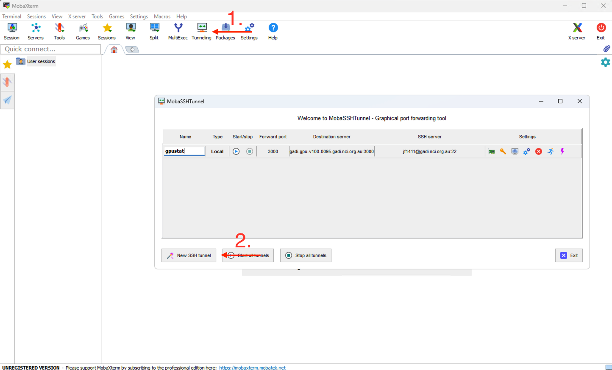
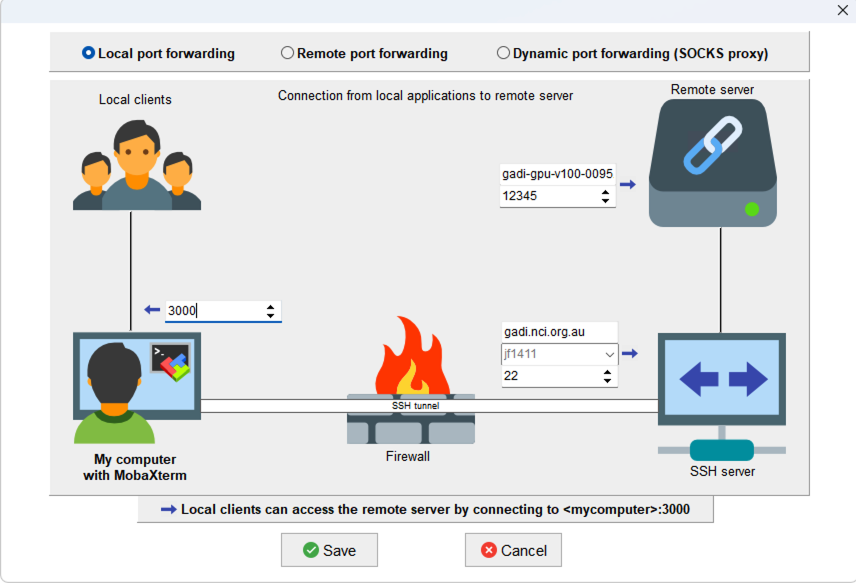

Monitoring your job
Job monitoring
You should monitor your jobs to keep track of their progress but refrain from checking your jobs too frequently. Repeated queries will be considered attacks, especially in quick succession and you may get a warning from NCI. NCI recommends querying your jobs’ status a maximum of once every 10 minutes.
Like Artemis, you can use the qstat command to monitor jobs on Gadi. The NCI Gadi job monitoring page describes some commonly used flags to qstat.
Job IDs
Like Artemis jobs, jobs submitted to Gadi are given a jobID. This is shown to you as soon as it has been accepted, for example 135615373.gadi-pbs.
When querying the job with qstat, you can use the full ID, or just the string of numbers (omit the .gadi.pbs).
For example, the below two commands are equivalent:
qstat -xf 135615373.gadi-pbs
qstat -xf 135615373If you have multiple jobs running, you do not need to check them individually with the job ID. You can check the status of multiple jobs using your NCI user ID:
qstat -u <nci-user-id>Job logs
By default, the PBS job logs will be created in the directory from which the qsub command was entered, and combine the job name and the job ID.
For example, a job with #PBS -N convert and job ID 133703660 will have standard output and resource usage written to convert.o133703660 and standard error written to convert.e133703660.
This differs slightly to Artemis, which has the same default filepath behaviour except the standard output is sent to the
The Gadi .o file has the resource usage at the end of the log making it easy to view a quick summary with the tail command:
$ tail -n 11 convert.o133703660 The output should look similar to:
Resource Usage on 2025-02-05 16:16:10:
Job Id: 133703660.gadi-pbs
Project: aa00
Exit Status: 0
Service Units: 23.94
NCPUs Requested: 7 NCPUs Used: 7
CPU Time Used: 02:57:33
Memory Requested: 63.0GB Memory Used: 51.14GB
Walltime requested: 08:00:00 Walltime Used: 02:44:09
JobFS requested: 100.0MB JobFS used: 0B
======================================================================================If desired, you can change the default log filepaths with the -o and -e directives, for example:
#PBS -o ./logs/convert-fast5.o
#PBS -e ./logs/convert-fast5.eThis omits the job ID from being included in the log file name and sends the logs to a different directory.
When a job is submitted to one of the Gadi GPU queues (i.e. gpuvolta and dgxa100), the job log will also contain information related to the GPU usage (lines 9-10):
Resource Usage on 2025-10-03 11:05:11:
Job Id: 151522816.gadi-pbs
Project: aa00
Exit Status: 0
Service Units: 0.96
NCPUs Requested: 12 NCPUs Used: 12
CPU Time Used: 00:03:13
Memory Requested: 95.0GB Memory Used: 9.81GB
NGPUs Requested: 1 GPU Utilisation: 86%
GPU Memory Used: 9.02GB
Walltime requested: 00:10:00 Walltime Used: 00:01:36
JobFS requested: 2.0GB JobFS used: 53.9KB
======================================================================================Monitoring resource usage in real time
Monitoring CPU jobs
To view the CPU and memory utilisation of a running job, you can use the bespoke nqstat_anu utility (ANU = The Australian National University, where Gadi is housed).
By default, running the command nqstat_anu will report on all jobs for the current user under their default project, providing the following details:
- % CPU utilisation
- walltime used
- walltime requested
- RSS
- maximum memory used by the job
- memory requested
- CPUs requested
- whether the job is queued or suspended
Run nqstat_anu -h for more options.
To change your default project, run switchproj <nci-project-id>, providing the ID of the project you want to switch to. If you don’t know what your default project is, run the command nci_account with no arguments. Since -P <nci-project-id> is not supplied, it will report on your default project.
Monitoring GPU jobs
NCI provides a useful utility called gpustat to monitor GPU utilisation. To access this tool, you need to first join the project dk92 via MyNCI portal.
Once your request has been approved, you can follow the instructions provided on the NCI User Guide to use gpustat. Please note that, while the qstat command accepts both the full and short formats of jobID, gpustat-run only takes the full ID string (i.e. including the .gadi-pbs part) to initialise the session.
A help information will display on your terminal when gpustat executes successfully. This should include a command to run on your local machine, following the format of
ssh -N -L <local port>:<Gadi GPU hostname>:<remote port> <your Gadi username>@gadi.nci.org.augpustat leverages SSH port forwarding (also known as SSH tunneling) to securely tunnel network connections through an encrypted SSH session. This is achieved by running the SSH command on your local terminal with the -L flag enabled. For users who are working with a CLI tool (such as a Mac or Git terminal), you can simply copy the command and then execute it. It will appear hanging because all the command does is forwarding the port so you can access the information on your local machine.
For GUI applications such as MobaXterm, you can create an SSH tunnel using its built-in SSH session manager:
- Open MobaXterm and create a new SSH tunnel. 
- In the session settings, fill in the following information. 
- Forwarded port: This is the local port number you will type in your browswer (e.g. 3000) to access to the monitoring dashboard. It does not have to be the same number as the remote port on Gadi (which changes everytime you rerun
gpustat-run). - SSH server: This configures the SSH server information, including the server url (gadi.nci.org.au), your gadi username (e.g. jf1411), and the port number (default number for SSH connection is 22).
- Remote server: This includes adding the GPU server hostname (e.g. gadi-gpu-v100-0095) as the “Remote server” and setting the “Remote port”. Such information can be both found in the
gpustat-runoutput.
- Click “Save” and then the “Start/stop” button to establish the tunnel.
Once the tunnel is established, you can access the gpustat web page on your local machine, i.e. by opening http://localhost:<local port> in your browser.
Monitoring job disk usage
Each project has an allocation of physical disk space and inodes on scratch, gdata and home. When running jobs on Gadi, it’s important to ensure you have sufficient allocation remaining to meet the needs of the job you are running, as exceeding the limit of these resources can cause a running job to fail. Please see the section on disk and inode usage for more details and how to query usage of these resources.